我自己用了很久的是华为 FreeBuds，前段时间在家里试了几天 AirPods 4，才第一次意识到这两者的降噪不是一个量级——以前用的降噪，顶多是让周围「稍微安静一点」，噪音还在，只是被压低了；AirPods 的降噪则是明显更彻底的隔绝感。音质这件事可能有品牌滤镜的成分，见仁见智；但降噪的差距，确确实实是听得出来的。这本书想搞清楚一件事：这个差距到底从哪来——是芯片堆料，还是压根不是一回事。
打开充电盒、耳机自动配对成功的那半秒钟，大多数人不会多想——这是「蓝牙」在后台完成的一次握手。但要讲清楚这个差距，得先从蓝牙这项技术本身讲起，再讲 AirPods 具体做对了什么，再往下拆到工程和竞品这两层，最后回到「入耳式 vs 头戴式」这个更大的框架里，给出答案。
协议与起源
公元 10 世纪，丹麦国王哈拉尔一世（Harald Gormsson）做成了一件当时几乎没人做到的事：把原本互相打仗的丹麦各部落、以及挪威的一部分，统一进同一个王国，还把整个王国从北欧异教改宗为基督教。他有个绰号——Blåtand，古北欧语，字面意思接近「蓝色的牙」，后来被英语世界翻译成 Bluetooth。这个绰号具体从何而来，史学界没有定论，流传最广的猜测是他有一颗蛀坏发黑发蓝的牙齿。
1996 年，爱立信、诺基亚、英特尔等几家公司凑到一起，想统一一套短距离无线协议的标准，取代当时各家互不兼容的私有方案。项目内部需要一个临时代号，工程师 Jim Kardach 提议用 Bluetooth——理由是哈拉尔把丹麦和挪威统一到了一起，这项技术的目标也是把手机、耳机、电脑这些互不兼容的设备统一到同一套协议里。这个「内部代号」后来被直接沿用成了正式产品名，一直用到今天。
配对：那半秒钟发生了什么
蓝牙配对本质上是两个陌生设备之间「从互不相识到建立信任」的过程，大致分三步。第一步是广播与发现：进入配对模式的设备开始不停地向外喊话，广播自己的存在；另一台设备主动扫描周围空间，把附近愿意被发现的设备列出来。这一步双方还没连接，只是打了个照面。第二步是建立连接与身份认证：用户选中设备后，双方协商生成一把只有这两台设备才知道的共享密钥；老式设备靠输入 PIN 码验证「是不是本人操作」，现代设备大多自动完成，用户几乎无感知。第三步是绑定：双方把这把密钥存下来，形成长期信任关系——以后再次相遇，凭密钥直接认出对方、自动加密连接，不用重新走一遍流程。这就是为什么 AirPods 平时开盖就能秒连：真正的「配对」只发生过一次，后面全是「凭密钥认脸」。
协议本身像个分层的「快递系统」：最底层管无线电波怎么发，往上还有几层各管一摊事。
从能连上到能省电：蓝牙版本简史
协议不是一次性定型的，蓝牙从 1999 年至今改了七八个大版本，每一次跳版本号，背后都是在解决上一代留下的具体麻烦。对理解耳机这件事来说，这段简史里有一个版本是真正的分水岭——不知道这一段，会很难理解为什么真无线耳机直到 2016 年前后才真正成为可能，而不是早个十年就出现。
能连上，但不太稳
爱立信主导发布，最初的设想只是取代设备之间那根笨重的 RS-232 串口线。但设备间兼容性混乱、连接经常掉线，几乎没有真正站住脚的消费级产品——这一代更像是「验证概念可行」，谈不上「好用」。
终于能打电话了
EDR（增强数据速率）把传输速度从 1Mbps 提到约 3Mbps，单声道蓝牙耳机——主要用来打电话，不是听歌——第一次大规模走进日常生活。那个年代马路上戴着一只耳塞、对着空气说话的商务人士形象，就是这个版本的产物。
BLE：省电这件事，从此不一样了
4.0 引入了 BLE（Bluetooth Low Energy，低功耗蓝牙），这是蓝牙历史上最关键的一次转折。在此之前的「经典蓝牙」为了保证连接不断线，必须维持相对高的功耗，这对耳机、音箱这类能塞进大电池的设备没问题，但对纽扣电池供电的小玩意来说就是灾难。BLE 换了一套完全不同的连接模型——设备大部分时间处于休眠，只在真正需要交换数据的瞬间短暂醒来——把功耗压到经典蓝牙的百分之一量级左右。这直接催生了后来整个可穿戴设备产业：心率手环、体感遥控器、防丢定位标签，没有 BLE，这些东西的电池撑不过一天。不过要澄清一点：早期 BLE 带宽极窄，传不了像样的音频，耳机行业最先吃到的红利其实是「查找我的耳机」「触摸手势同步」这类外围功能，音频本身低功耗化还要再等上十年。
更快，更远，也更能装
速度约为上一代的 2 倍，理论有效传输距离扩大到 4 倍，广播数据包的容量也大幅提升，为后来的室内定位、广播式音频铺了路。也是这一年，AirPods 发布了。
音频，终于也低功耗了
正式定义 LE Audio 标准，核心是新一代编解码器 LC3——同样码率下音质优于蓝牙耳机最基础的 SBC 编码，同时功耗明显更低，蓝牙终于能在低功耗模式下扛起一条像样的音频流，第三章会再细讲这颗编解码器。配套引入的 Auracast 广播音频，让一个音源可以同时广播给不限数量的接收端——比如机场大屏幕，所有人各自戴自己的耳机就能收听，这是过去「一对一」的经典蓝牙连接模式完全做不到的。
- SparkFun Learn – Bluetooth Basics（英文）— 硬件教育网站的入门讲义，图文并茂讲跳频、组网等再深一层的概念，还不想啃官方规范可以先看这个。
- 知乎「蓝牙的工作原理是什么」（中文）— 高赞回答用类比方式解释配对与传输，适合完全零基础打底。
AirPods 与苹果生态
蓝牙协议本身从 1999 年 1.0 版发布起就存在了，但真正让「无线耳机」从极客玩具变成人手一副的日常物件，AirPods（2016 年发布）是关键的一步。它解决的不是「能不能连上」，而是「连接这件事能不能从你的意识里消失」。
普通蓝牙设备配对，要手动打开设置、搜索、点连接；AirPods 打开盒盖的一瞬间就配对完成，靠的是 Apple 自研的 H1/H2 芯片：它在标准蓝牙协议之外，加了一层私有握手协议，配合 iCloud 账号，一副耳机在一台设备上配对过，登录同一账号的所有设备都能直接用。这不是蓝牙标准的一部分，是 Apple 在标准之上叠的一层「私有捷径」——也是为什么用非苹果手机连 AirPods，配对体验会明显更接近「普通蓝牙耳机」。
H1 2019 年 3 月随第二代 AirPods 首发（不是 Pro 系列首发的，AirPods Pro 一代同年 10 月发布，沿用的还是同一颗 H1），算力大致相当于当年 iPhone 4 所用的 A4 芯片。它的核心贡献是把设备间切换速度提到约两倍，并首次撑起「嘿 Siri」免手动唤醒。H2 2022 年 9 月随 AirPods Pro 二代发布，是 10 核设计，内含近 10 亿个晶体管——大约是 H1 的两倍，制程也更先进。这颗芯片具体带来了两个飞跃：一是主动降噪的环境噪音采样频率提到每秒 48000 次，配合新的低失真驱动单元和定制放大器，官方口径降噪深度是初代 Pro 的两倍；二是自适应通透模式、个性化空间音频这类需要实时运算的功能，复杂度大幅提高——这些不是 H1 不愿意做，是 H1 的算力根本撑不住。
六代之间，每次都在解决上一代的什么问题
把 AirPods 的历代放在一起看，不是简单的参数堆高，每一代都在回应上一代留下的具体缺口。
拿掉耳机线之后的第一个答案
核心不是音质，而是配对体验——自研 W1 芯片实现开盒自动配对、iCloud 账号同步识别，解决当时蓝牙耳机普遍配对繁琐、连接不稳的痛点。外形沿用 EarPods 的开放式佩戴，不隔音，续航约 5 小时。
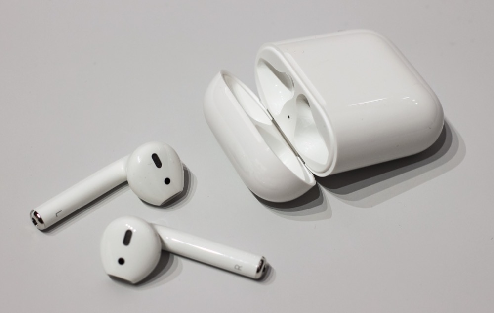
骨架不变，神经升级
W1 换成 H1，解决的是「设备切换慢、Siri 不够快」——切换更迅速，支持「嘿 Siri」免手动唤醒，通话延迟也降低。外观和一代几乎没变，本质是一次中期改款。
从「平价爆款」到「专业化」的分水岭
解决「开放式不隔音、不适合通勤和嘈杂环境」的问题——首次引入硅胶耳塞的入耳式佩戴、加入主动降噪（ANC）与通透模式，压力传感器取代触摸控制。
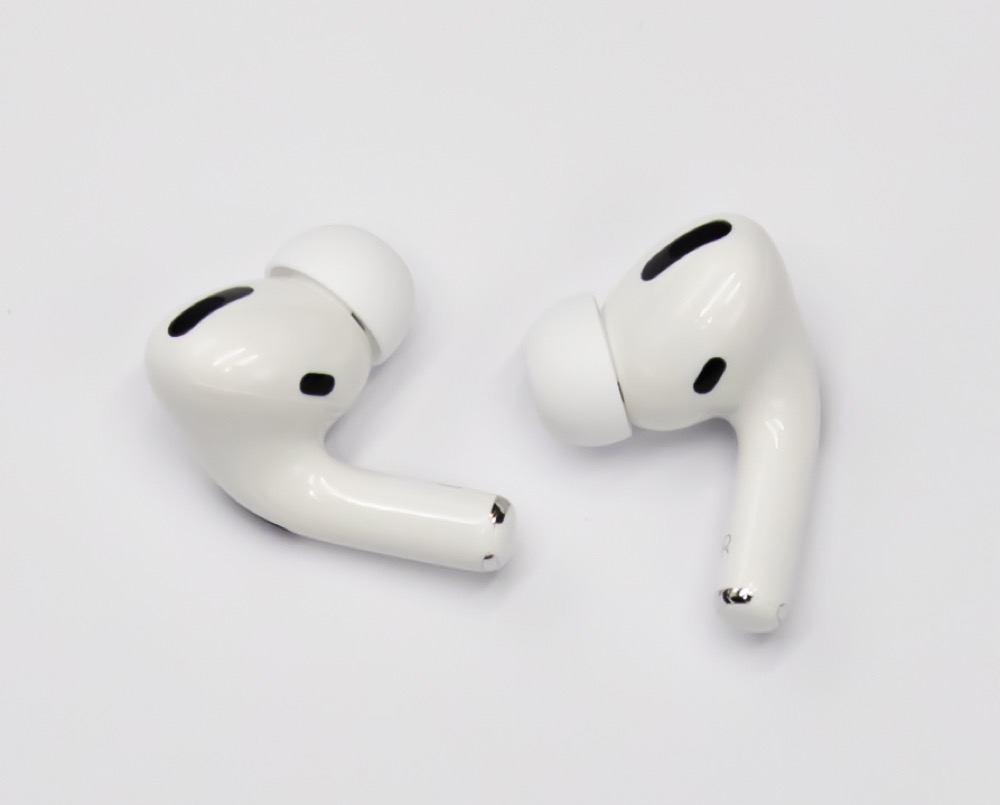
主线也想要贴合和沉浸感
外形向 Pro 靠拢的半入耳设计（但仍非入耳、无硅胶耳塞、无 ANC），加入空间音频、防汗防水，续航提升到 6 小时。回应的是「不想要压迫感、但想要更贴合的佩戴和更沉浸的音效」这批用户。
降噪拉开代差
芯片从 H1 换成 H2，降噪算法更强（官方口径降噪深度较一代提升约两倍），加入自适应通透模式，音质处理更精细，首次支持触摸滑动调音量。
把降噪下放给「不想入耳」的人
标准版沿用开放式设计但重新塑形、贴合度更好；ANC 版本首次让非入耳式外形也做到主动降噪——业界曾普遍认为 ANC 依赖入耳密封，Apple 用算法弥补了物理密封的缺失。回应的是「喜欢开放式佩戴、但也想要降噪」这批此前一直被忽略的用户。
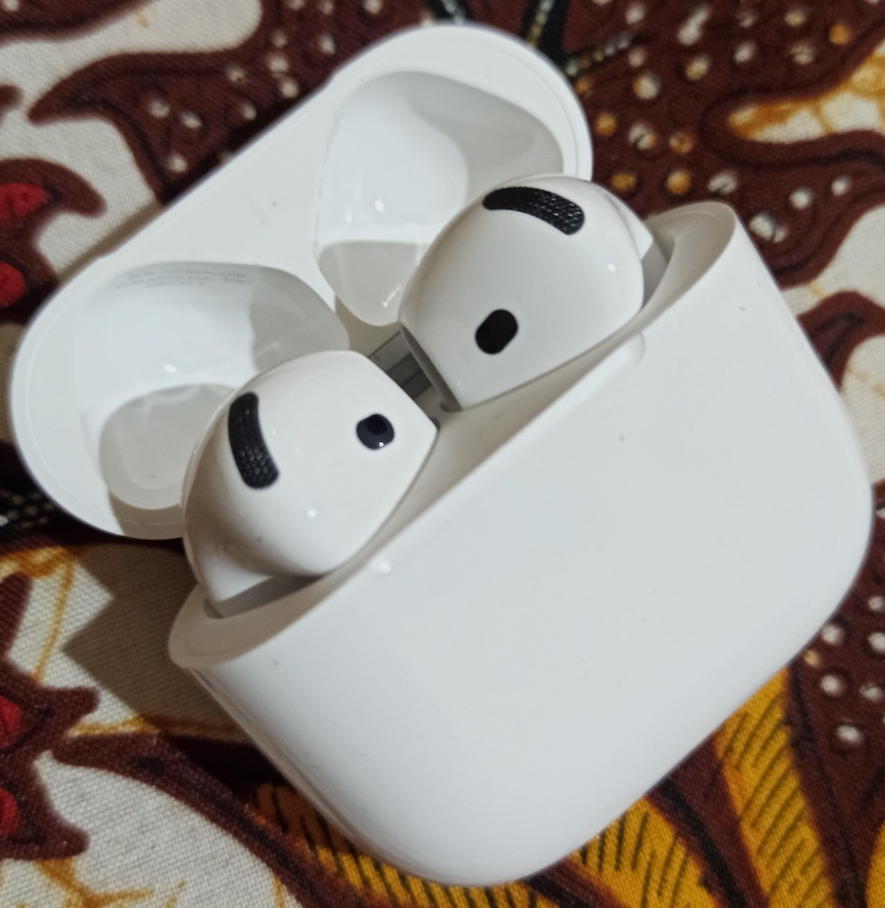
空间音频：为什么转头，声音不会跟着转
三代 AirPods 开始加入的「空间音频」，很多人第一次体验时会有点反直觉——看电影时画面里的声音本该来自屏幕左前方，你转头看向别处，声音听感却依旧钉在原来那个方向不动，就像真的坐在电影院里，物理声源不会因为你扭头而跟着移动。这个效果靠的是「双重定位、实时补偿」：耳机内置陀螺仪和加速度计，持续追踪你头部的转动角度和姿态；播放端（iPhone、iPad 或 Mac）同样有一套传感器，追踪设备本身的位置和朝向。系统把两组运动数据实时做比对，重新计算声场的空间映射，让虚拟声源始终锚定在内容原本设定的方位。这套补偿是逐帧持续进行的，一旦头动传感器信号延迟过高，「声音钉住不动」的错觉就会被打破——这也是为什么这个功能对芯片实时算力要求很高，H1 撑不住，H2 才算真正做顺。
接下来是 MacBook Air 和 iPad，没有 iPhone 会怎样
AirPods 的自动切换靠的是同一个 Apple 账号 + iCloud 同步配对信息，这套机制在 macOS Big Sur / iPadOS 14 及以上就已经完整可用，不需要 iPhone 在场——也就是说，只用 MacBook 和 iPad，大部分「顺滑感」已经能拿到。真正卡在 iPhone 门槛上的，只有一小块：
- 设备间自动切换播放（Mac / iPad 官方原生支持）
- 固件后台更新（Mac、iPad 都能触发，不必等 iPhone）
- 空间音频沉浸式播放 + 头动跟踪（Mac、iPad 均可播放）
- 共享音频、助听功能与听力测试：官方支持 iPad（Mac 不支持，但你的 iPad 能补上这块）
- 个性化空间音频建模——要用 iPhone X 及以上的摄像头扫描耳廓和头型，建好的档案才能同步到 Mac / iPad 上直接用
- 部分 Siri 快捷指令场景的完整性，依赖 iPhone 更深的系统级集成
换句话说，MacBook Air + iPad 这套组合基本没吃亏，唯一「没有 iPhone 就做不了」的是个性化空间音频建档这一步。反过来，如果换成 Android 手机使用 AirPods：基础蓝牙播放、通话、麦克风、甚至主动降噪本身都正常工作，只是没法在手机上细调降噪强度（只能按耳机本体切换模式），也会丢掉自动切换、免唤醒 Siri、佩戴检测自动暂停、固件后台自动更新这些「苹果生态专属」的顺滑感。
降噪具体是怎么做到的
AirPods Pro 的降噪系统由两组麦克风分工完成：朝外的前馈麦克风负责「提前侦听」——外部噪音还没进入耳道就被捕捉到，芯片据此提前生成一个反相声波，抢在噪音抵达耳膜前完成抵消；朝内的反馈麦克风负责「实时校验」——监听耳道内实际残留的声音，做闭环修正。两路信号交给 H1/H2 芯片里的实时 DSP 处理，输出的反相声波与外部噪音波形叠加，能量相互抵消，人耳听到的合成结果就是「安静」。
回到开头那个问题——为什么 AirPods 隔音明显比某些同价位耳机更狠，关键其实有两层：一是硅胶耳塞本身的被动物理密封就已经先隔掉一部分中高频噪音；二是在此基础上叠加前馈 + 反馈双麦克风的主动抵消，双重叠加的效果明显强于单纯依赖算法而密封一般的方案。物理极限也在这——低频噪音（空调声、发动机轰鸣）波长长、变化慢，DSP 有充裕时间计算反相波，抵消效果最好；高频和突发性瞬态噪音（钥匙碰撞声、说话的辅音）波长短、变化快，反应跟不上，效果明显打折扣。这也是为什么 ANC 耳机在飞机、地铁上体验好，但闹市突发人声环境下降噪感偏弱。
AirPods 卖爆之后：一个品类、一种符号、几桩争议
把镜头拉远一点看销量：2024 年 Apple 以约 7650 万副的出货量在全球真无线耳机市场占据约 23% 的份额，位列第一；而营收份额更夸张——2026 年第一季度 Apple 拿下全球 TWS 收入份额约 44%，远高于它的销量份额，说明 AirPods 的单价明显高于行业平均水平，走的是「量不是最大、钱赚得最多」的路线。行业估算 AirPods 全年销量长期维持在 9000 万到 1 亿副的量级，年营收在 200 亿美元上下——单看这一条产品线，体量已经超过很多上市公司的全部营收。
更有意思的是它对整个品类的塑造作用。2016 年初代 AirPods 发布时，「无线充电盒 + 两根分离耳塞」的造型一度被科技媒体嘲笑，说它看起来像「牙刷头掉了一半」；但两三年内，它迅速把「真无线耳机」从一个边缘极客玩具变成主流消费电子最大的增长赛道之一，三星、华为、索尼、小米的同类产品，基本都是在 AirPods 证明这个品类有市场之后才跟进的。与此同时，AirPods 本身也从一件「科技产品」逐渐演变出「时尚配饰」的一层身份——社交媒体和名人效应放大了这个过程，戴着白色耳机在公共场合出现，某种程度上成了一种无声的社会信号，不少评论甚至称它是「隐性炫富」符号之一。这也是为什么本书开头提到的「品牌滤镜」值得认真对待：AirPods 的吸引力从来不只是参数，还有这层文化附加值。
当然，围绕它的争议同样不少，值得客观摆出来。环保方面：AirPods 内部电池是用胶水封死在塑料壳体里的不可拆卸设计，锂电池两年左右容量明显衰减后，基本只能整机报废，环保组织 PIRG 等直接批评这是「设计成会死的产品」，构成持续性的电子垃圾问题。可维修性方面：知名拆解机构 iFixit 对历代 AirPods（包括最新的 AirPods Pro 系列）给出的可维修评分普遍是 0 分（满分 10 分），官方立场也是电池和电路板无法在不破坏机身的前提下更换。定价方面：AirPods 长期被归入「苹果税」的讨论范畴——同等硬件成本下，售价明显高于安卓阵营的同类产品；但也有分析指出，相比苹果其他产品线，AirPods 的定价策略其实更接近「够贵到显得有档次、又不贵到年轻用户买不起」的中间地带，未必是单纯的溢价盘剥。这几桩争议没有标准答案，但了解它们，能让你在下次冲动下单前多想半秒。
蓝牙耳机是怎么造出来的
空间是零和的
喇叭（动圈单元）越大低频越好，但会挤压电池仓；电池越大续航越好，但会顶占天线空间；天线又必须尽量远离金属电池和人体——耳道是高吸收介质，稍不注意信号就明显衰减。每样东西都想要更大，但腔体就那么大，工程师的解法通常是「不让一个部件独占一块空间」：用陶瓷天线或 LDS（激光直接成型）工艺，直接在腔体内壁的异形曲面上做出天线走线，把原本「占一块地方」的天线变成「贴着别的部件的形状长出来」；电池普遍用扣式钢壳电池而不是方形电芯，因为扣式电池更容易塞进圆形腔体的犄角旮旯。不同品牌对这场「空间战争」的取舍不同——更看重音质还是更看重佩戴稳固——直接体现在耳机腔体的形状设计上。
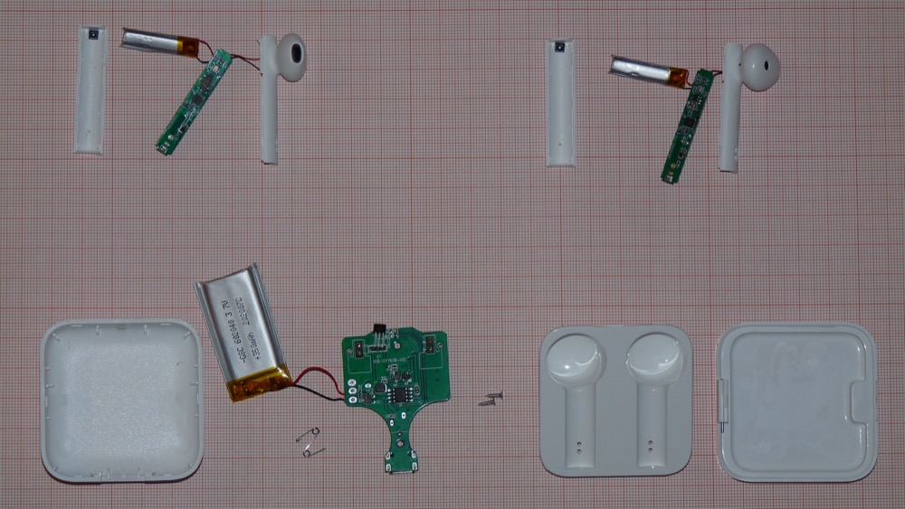
耳朵里还塞了多少传感器
喇叭、电池、天线之外，一副像样的真无线耳机里还挤着好几种传感器，各自负责一件不起眼但离不开的小事。入耳检测靠的多是红外接近传感器：芯片驱动一颗微型红外发光元件持续发光，配合光电二极管接收反射光——耳塞戴入耳道后距离皮肤极近，反射光强度会骤变，芯片据此判断「戴着」还是「摘下」，触发自动暂停或播放。这类传感器功耗极低，是它能长期贴着耳道口持续工作而不明显拖累续航的前提。触摸手势则依赖电容触摸传感器（检测手指触碰耳机柄部时的电容变化）和加速度计（检测点按、挤压产生的微小加速度突变）配合使用——单独用哪一种都容易误触发，比如把「手动调整耳机位置」误判成「主动点按」，两者融合判断能明显降低误操作率。
麦克风这块还有一层容易被忽略的取舍：普通麦克风靠空气振动收音（气传导），音色自然，但抗风噪、抗环境噪声的能力弱；骨传导麦克风直接贴合耳道或耳周骨骼，采集说话时颅骨振动传出的声音信号，物理上天然屏蔽了空气里的风噪和环境噪声干扰——风吹不动骨头——代价是音色发闷，需要额外算法补偿缺失的高频细节。目前旗舰产品多用「多气传导麦克风阵列做波束成形（利用多个麦克风之间声音到达的时间差，定位说话人方向、压制其他方向的噪声）+ 骨传导麦克风兜底」的混合方案，通话降噪能做到什么程度，很大程度上就取决于这套麦克风阵列的规模和算法的成熟度，第四章讲到各家「通话降噪」卖点时还会再碰到这个话题。
防水是怎么一层层做出来的
产品页上常见的 IPX4、IPX7 这类标注，X 代表没有做防尘测试，后面的数字才是防水等级。IPX4 是「任意方向泼溅水都不受影响」，日常防汗够用；IPX7 则要求「可耐受 1 米水深、持续浸泡 30 分钟」，这个级别通常需要三层处理同时到位，缺一不可。第一层是物理结构：做迷宫式气道设计和精密公差密封，外壳缝隙、按键、充电触点周围加橡胶圈或精密卡合，物理上尽量堵住水能进入的路径。第二层是纳米疏水涂层：对内部电路板、扬声器网罩喷涂一层类似 Liquipel、P2i 这样的工艺，在微观尺度形成排斥水分子的表面，即便水真的从外壳缝隙渗进去，也很难附着在电路上造成短路。第三层是声学防水膜：在扬声器出音孔、麦克风孔上加一层透声不透水的高分子薄膜，兼顾进音效果和密封性。这三层是叠加关系，只靠喷涂涂层做不到 IPX7 级别，必须配合结构密封才行——跟前面「空间战争」是同一个道理：防水这件事，也是在指甲盖大小的空间里，多做一层就多占一点地方，多花一分钱。
续航和降噪是一对矛盾
主动降噪不是一次性设置，而是每秒钟都在跑的实时运算：麦克风持续采集外界噪声波形，DSP 芯片实时计算反相声波去抵消，这个「采集—计算—输出」的循环一刻不停。这就是为什么开启 ANC 通常会让播放时间缩短两到三成。充电盒的作用是「续航接力」：耳机本体电池容量很小，撑不了太久，但盒子里塞了一块大得多的电池（通常是耳机的三到五倍），耳机放回盒子就快速回血——用户感知到的「总续航」其实是耳机电池和盒子电池的接力赛，不是耳机电池的独角戏。
编解码器：音质、延迟、功耗，选两个
一句话总结取舍逻辑：音质越好通常意味着码率越高、越费电、对连接稳定性要求越高；兼容性越好通常意味着技术越保守、音质天花板越低。没有「最好的编解码器」，只有「针对场景选的编解码器」——这也是第一章那张辟谣卡片的答案来源：无线音质的差距，主要来自编解码器新旧和硬件调音，不是「无线」这件事本身。
- iFixit 拆解报告（英文）— AirPods 系列的历代拆解，能直观看到「空间战争」的实物证据；越新的产品往往因为大量用胶水固定而越难拆，本身就是空间优化到极致的活教材。
- 知乎「蓝牙编解码器全解析」系列（中文）— 搜「LC3 SBC AAC aptX LDAC」，可以作为这部分内容的补充精读。
竞品全景
把镜头拉远一点，蓝牙耳机这个品类里，几家主流公司押的完全不是同一件事。挑几家有代表性的来看，会发现比起参数高低，「这家公司赌的是什么」才是更有意思的问题。
在 AirPods 之前，「真无线」不是没人做过
德国创业公司 Bragi 2014 年靠 Kickstarter 众筹到 330 万美元，推出了野心勃勃的 Dash——塞进了 4GB 存储、心率传感器、骨传导麦克风一堆「智能」功能，结果野心太大反而成了败因：蓝牙连接不稳定、触控操作复杂难学、健身追踪不准、骨传导麦克风在发布时几乎不可用，体验支离破碎，没能真正打开市场。2016 年 Apple 发布 AirPods，参数其实并不突出——初代甚至没有降噪，佩戴稳定性也一般——但靠自研 W1 芯片实现「开盒即连、iCloud 账号级自动配对、断连后自动重连」这套丝滑体验，加上强大的营销和 iPhone 用户基数，一举把「真无线耳机」从极客玩具变成大众消费品。业内普遍认为，AirPods 的成功证明了这个品类真正的瓶颈从来不是参数堆料，而是连接可靠性和易用性这类「体验工程」问题——这条结论放到今天依然成立，第三章讲的所有工程难点，本质上都是在为「稳定好用」这四个字埋单。也正因为如此，后来者很难靠「参数比 AirPods 高」翻盘，只能各自找一条 Apple 没占住的路——这就是接下来几家的故事。
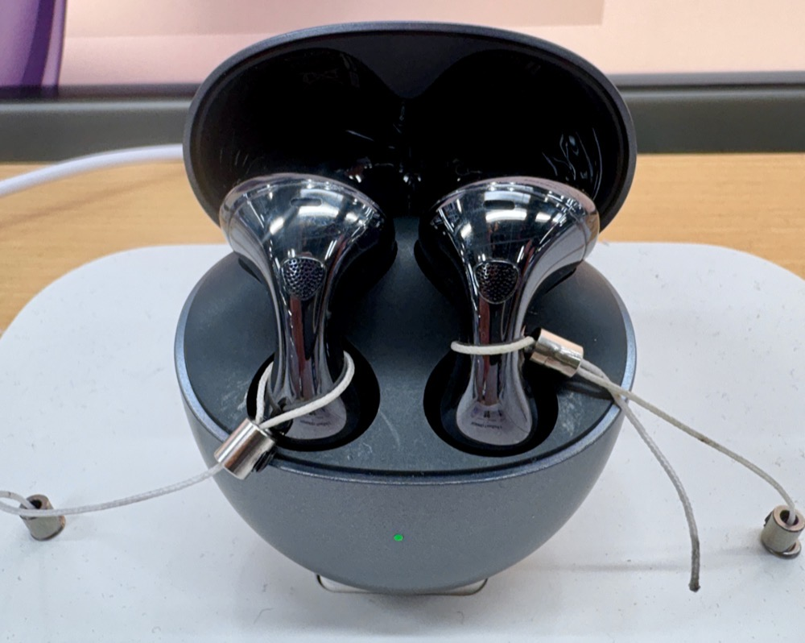
华为 FreeBuds
从 FreeBuds 一路做到 Pro 4（2024 年底发布的「纯血鸿蒙」耳机），通话降噪是这条产品线最执着的方向：Pro 3 用四麦克风阵列加骨传导振动拾音单元（VPU，直接感知说话时颅骨振动，不受环境噪声干扰）配合多通道神经网络算法，抗风噪做到 9m/s；Pro 4 进一步加了反向骨传导拾音麦克风，通话背景音消除提到 100dB。「超级终端」基于鸿蒙的分布式能力，耳机能同时挂在手机、平板、PC、手表账号下，通话会自动抢占其他设备正在播放的内容——本质是账号级设备协同，不是单纯的蓝牙多点连接。制裁压力下，华为反而在自研传感器和芯片上加码投入，可穿戴品类某种程度上成了对冲手机份额萎缩的支点，但国际市场存在感依然明显弱于中国本土。
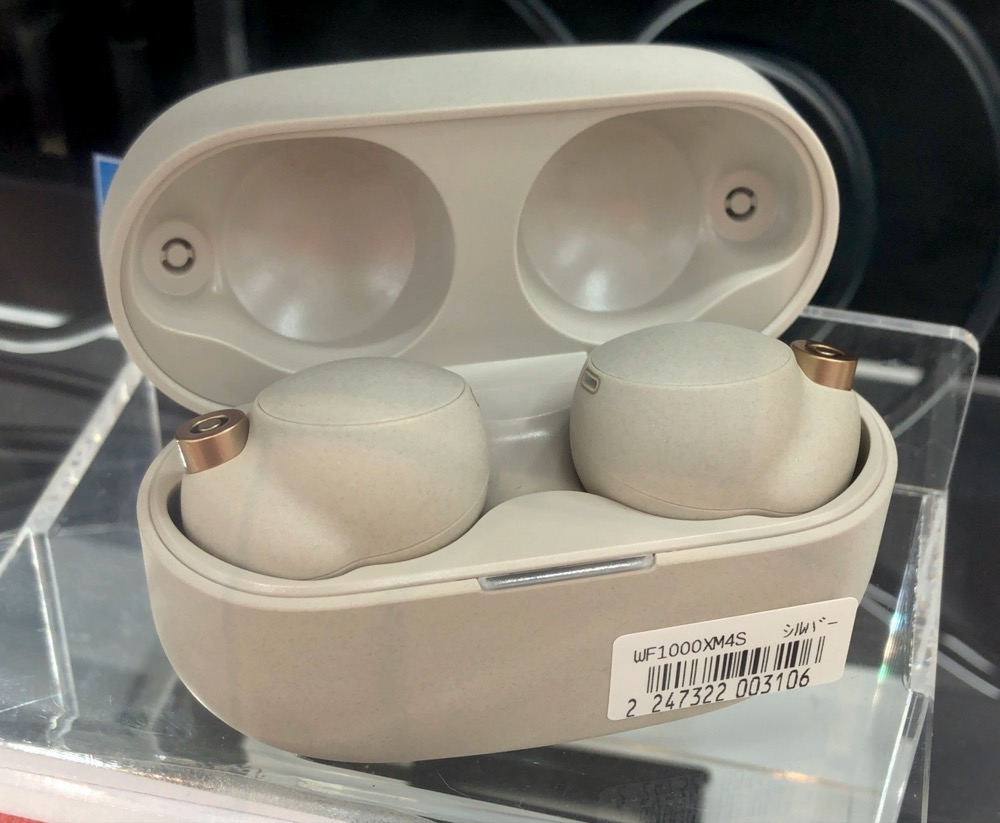
索尼 WF-1000X 系列
XM3（2019）到 XM4（2021）到 XM5（2023）是一条「先做加法、再做减法」的路：XM4 把降噪和音质都升级了，但机身和充电盒明显变大，被吐槽「更好用但更臃肿」；XM5 针对性瘦身，耳机小 25%、盒子也小 25%，能塞进牛仔裤口袋。核心卖点 LDAC 编解码器分三档码率——990kbps 音质最好但对信号稳定性要求最高，660kbps 是音质与稳定的折中，330kbps 牺牲码率换抗干扰，大多数手机默认「自适应」模式动态切换，实际听感上 660kbps 往往比强行锁 990kbps 更顺滑。索尼的调音基因能追溯到 Walkman 时代对「临场感」的执念；360 Reality Audio 是它对标苹果空间音频的方案，主打「把听众放进音乐会现场」，但依赖用户拍耳廓建模、且仅少数流媒体平台支持，生态开放度明显不如借力 Apple Music 全量铺开的空间音频。
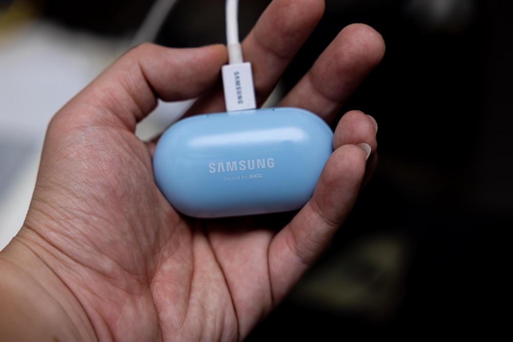
三星 Galaxy Buds
从初代 Galaxy Buds（2019，AKG 调音）到 Buds+（双单元喇叭）到 Buds Pro（首次上主动降噪）到 Buds2 Pro（机身缩小 15%）再到 Buds3 Pro（2024，外形改成类 AirPods 的带柄设计，是三星耳机史上最大的一次设计转向）。自研的 Samsung Seamless Codec（SSC）分普通版和 UHQ 版，UHQ 支持 24bit/96kHz 采样率，宣传语常说「近乎无损」，但技术本质仍是有损压缩，值得多留一个心眼；这套编解码器只有「三星手机 + 三星耳机」才能激活，是标准的生态锁定打法。三星和 Google 的关系也很微妙：Wear OS 3 是三星 Tizen 和 Google Wear OS 合并的产物，两家底层技术深度合作，但 Galaxy Buds 和 Pixel Buds 在硬件上是直接竞争对手——某种程度上是安卓阵营内部的一场内战。（耳机里塞的是独立小型音频芯片，不是手机用的 Exynos，这点常被搞混。）
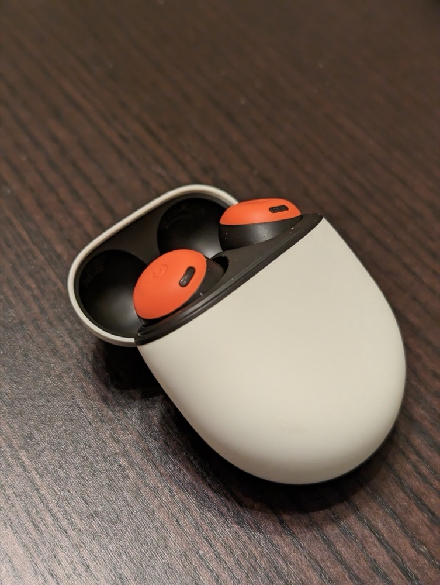
Google Pixel Buds
这条产品线走得并不顺：初代（2017）是有线颈挂式；真无线二代（2020）因为频繁断音口碑翻车，2021 年被静默下架；靠 99 美元的 A-Series 才把连接问题修好、重新走量；Pro（2022）首次加入主动降噪；Pro 2（2024）搭载 Google 第一颗专为耳机定制的 Tensor A1 芯片，音频处理速度提到声速的 90 倍（初代 Pro 是 5-6 倍），降噪强度翻倍。但 Pixel Buds 真正的差异化不在芯片参数，而在「实时翻译」：长按耳机唤醒 Google 助手，说出翻译指令，双方对话被识别后近实时互译，覆盖约 40 种语言、单次延迟 2-4 秒——这套体验完全靠云端 AI 弥补硬件短板，跟前三家靠堆料竞争是完全不同的路子。Pro 2 的宣传语直接是「为 Gemini 打造的耳机」，赌的是生成式 AI 会成为下一个差异化战场。
除了这四家，市面上还有小米 / Redmi Buds 这类主打「不追新技术首发、靠更低定价走量」的性价比路线——不跟旗舰比参数，赌的是价格敏感、只想要基础蓝牙耳机功能的大多数普通消费者。
华为赌生态粘性，索尼赌单品极致，三星赌安卓阵营默认选项，Google 赌 AI 原生集成，小米赌极致性价比——同一个品类里，五种完全不同的「你凭什么买我」的商业逻辑，而不是同一张参数表上的高低分档。这场竞赛的体量也早不是小打小闹：2023 年全球 TWS 耳机出货量约 3 亿副，市场规模在 300 多亿美元上下（不同统计口径略有出入，但都在「数百亿美元、年出货量数亿副」这个量级）。竞争格局大致呈三分之势：Apple 凭自研芯片和 iOS 深度整合稳坐高端第一阵营，吃走了不成比例的利润；中国品牌——小米（2024 年出货约 2600 万副）、华为（约 1480 万副）、OPPO / Realme（合计约 1800 万副）——靠智能手机生态捆绑和激进定价，在中低端走量称霸，中国单一市场就占了全球 TWS 总量约三分之一；索尼、三星、Google 这类品牌则各自守住自己的细分心智。苹果吃高端利润，中国品牌吃走量份额，剩下的玩家各占一块山头——这大概是这个千亿级市场目前最接近事实的一张地图。
入耳式 vs 头戴式
前四章讲的都是「同为真无线入耳式耳机」内部的技术和商业差异。但还有一层更大的分野常被忽略——入耳式和头戴式，从物理结构上就不在同一条起跑线。
驱动单元：耳罩比耳道大得多
头戴耳机耳罩空间大，能塞进 40 毫米甚至更大的动圈驱动单元；入耳式受耳道尺寸限制，驱动单元通常只有 6 到 11 毫米。这不是简单的「越大越好」，而是物理规律决定的：低频下潜需要驱动单元推动更大的空气量才能形成足够声压，大振膜天然更擅长这件事；同时耳罩内部有更大的空气腔体，能提供更宽的声场——声音听起来「在头外面」，而不是糊在耳朵里。
被动隔音的地基，决定了主动降噪的天花板
这是这一章最关键的一层逻辑，也是全书要回答的核心问题。ANC 的原理是反向声波抵消，但它对高频噪音效果有限，主要擅长消除低频、稳态的噪音；真正扛住人声、键盘声这类中高频噪音的，是被动隔音——物理结构本身堵住或包裹耳朵的程度。头戴式的耳罩用记忆棉整个包住耳廓，形成一个体积更大、更稳定的密封腔体；入耳式靠硅胶或泡棉耳塞尖去堵耳道口，密封效果高度依赖佩戴角度和耳塞贴合度，一旦漏气，ANC 算法再强也补不回来。
所以同样的降噪算法，扣在头戴式上天然有更好的「被动隔音地基」，主动降噪只是在这个地基上锦上添花；入耳式的主动降噪则必须同时对抗更弱的物理密封，上限自然更低。这就是为什么同样标榜降噪，头戴式普遍比入耳式更狠——不是芯片算法差距，是物理结构的先天差距。Bose 官方和媒体测评也都明确指出，同一代技术下，QuietComfort 头戴式的降噪效果优于同代的入耳式版本。
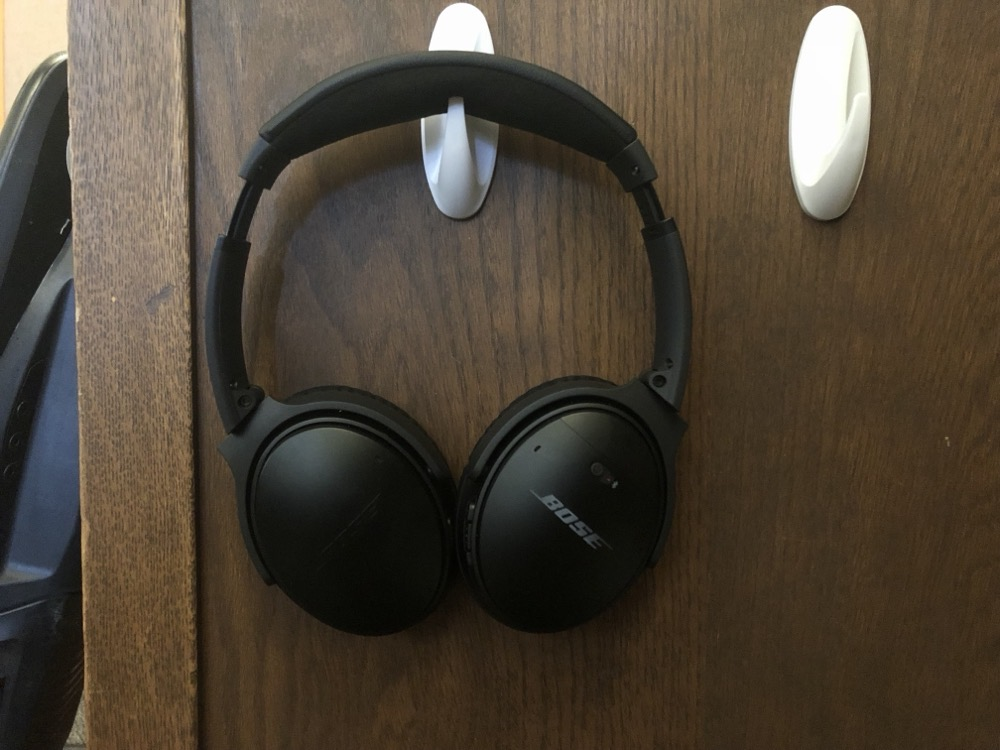
续航：又一次空间战争的延伸
头戴式电池仓能塞进耳罩或头梁内部，体积是入耳式耳机腔体的几十倍，续航普遍是量级差距。这跟第三章讲的「空间战争」是同一逻辑的延伸：入耳式为了塞进耳道大小的机身，电池、天线、驱动单元都要抢空间，续航必然是被压缩最狠的一项。
三组直接对照
AirPods Pro 2 vs AirPods Max——同品牌内最直接的对照。Max 用大尺寸驱动单元和大耳罩，声场、低音、降噪隔音效果全面占优；Pro 2 靠新驱动单元和算法在小体积里做到「够用的优秀」，但物理天花板明显更低，续航也差了三倍以上。
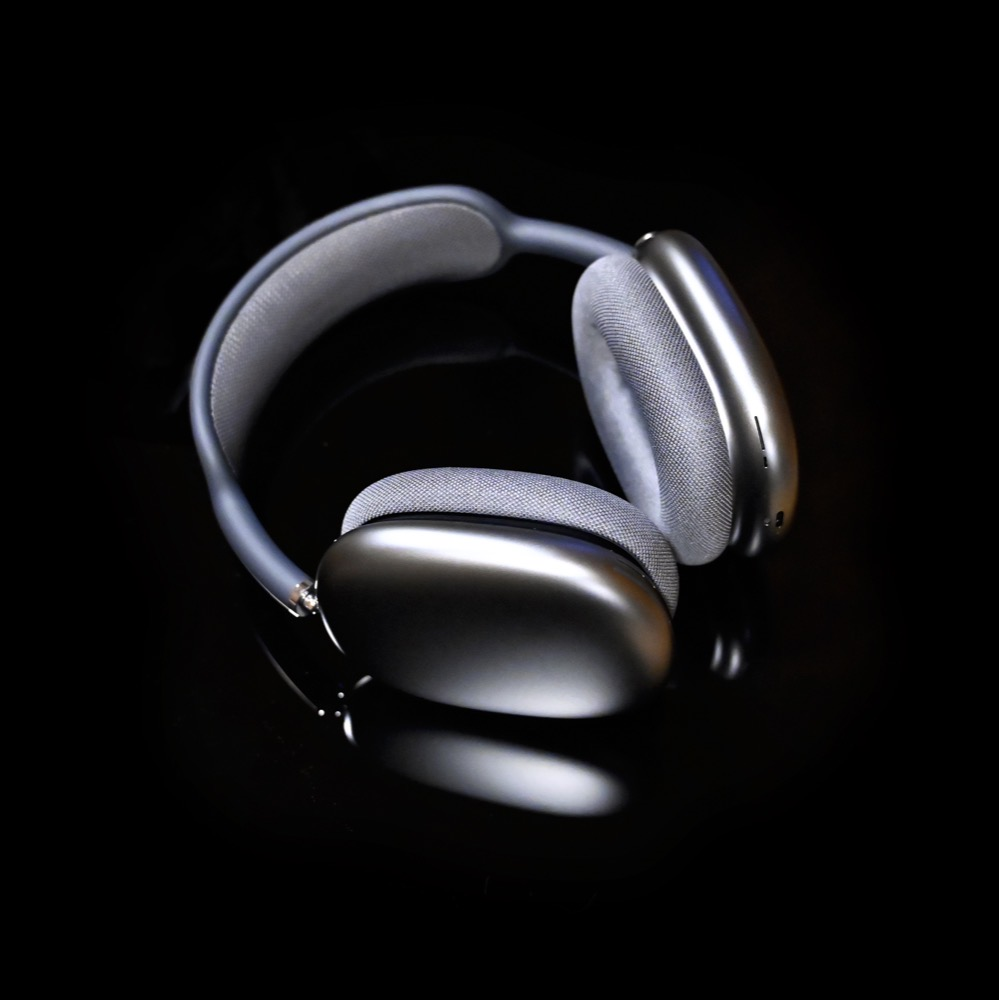
索尼 WF 系列 vs WH 系列——索尼头戴式旗舰同样是大驱动单元 + 耳罩设计，长期被认为是行业主动降噪的标杆之一；WF 系列受限于入耳形态，隔音效果依赖耳塞贴合度，是「同品牌同代技术、不同形态天花板不同」的又一个例证。Bose QuietComfort 耳塞 vs 头戴式也是同样的结论——官方测评明确认可头戴式版本的降噪效果更强。
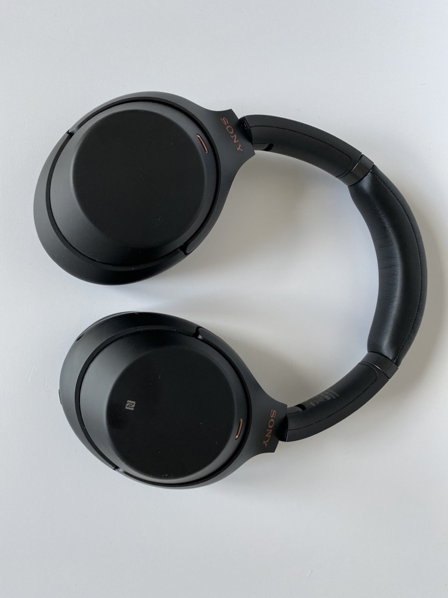
回到开头那个问题——为什么同样是降噪耳机，AirPods 隔音明显比 FreeBuds 更狠。到这里可以把答案收束到一个更大的框架里：这从来不只是「哪家算法更牛」的竞赛，而是不同产品在物理空间上的先天差距。头戴式有更大的耳罩去做被动隔音的地基、更大的腔体去塞更大的驱动单元、更大的电池仓去撑续航；入耳式为了塞进耳道大小的机身，在这三项上都要做妥协，即便是同一家公司内部，入耳旗舰和头戴旗舰的降噪上限也不在一个量级。技术进步会不断缩小这个差距——AirPods Pro 2 已经很接近老一代头戴式的降噪水准——但只要耳道和耳廓的物理尺寸还在那里，头戴式的降噪天花板就会一直比入耳式更高一截。所以与其问「为什么这款降噪更狠」，不如先问「它是入耳式还是头戴式」——形态选择本身，往往比芯片型号更能预判降噪的上限。
图片来自 Wikimedia Commons：AirPods Pro 二代 © Hajoon0102（CC BY-SA 4.0）；Jelling 石碑 © Ljunie（CC BY-SA 4.0）；AirPods 一代 © Maurizio Pesce（CC BY 2.0）；AirPods Pro 一代 © Arne Müseler（CC BY-SA 3.0 DE）；AirPods 4 © AppleFans 1（CC0）；AirPods Max © SimonWaldherr（CC BY-SA 4.0）；Sony WH-1000XM3 © digitalpush.net（CC BY 4.0）；Bose QuietComfort 35 II © Carsonjp21（CC BY-SA 4.0）；华为 FreeBuds 6 © Kyu3a（CC BY-SA 4.0）；索尼 WF-1000XM4 © Kyu3（CC BY-SA 4.0）；三星 Galaxy Buds+ © Dinkun Chen（CC BY-SA 4.0）；Google Pixel Buds Pro © Mliu92（CC BY-SA 3.0）；真无线耳机拆解图 © Dmitry G（CC BY-SA 3.0）。